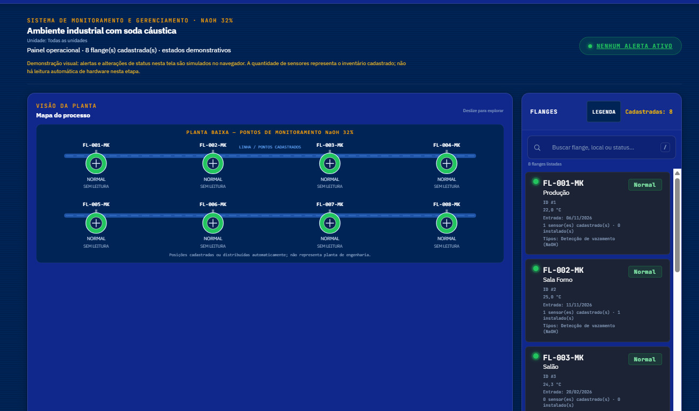

Gestão de flanges
Cadastro, consulta e acompanhamento de ativos industriais e de suas condições registradas.
Projeto acadêmico desenvolvido para apoiar o acompanhamento de flanges em linhas com soda cáustica, organizar manutenções e dar visibilidade a situações que exigem atenção.

Cadastro, consulta e acompanhamento de ativos industriais e de suas condições registradas.
Visualização de leituras e registro de condições de atenção conforme os dados disponíveis no sistema.
Registro de atividades, responsáveis e informações para consulta e rastreabilidade.